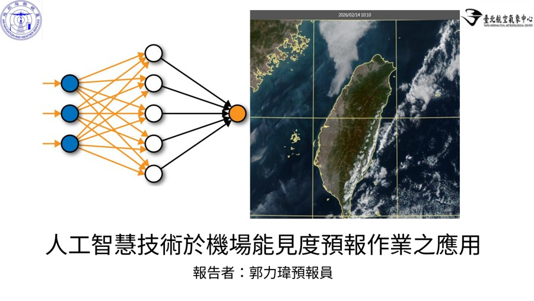
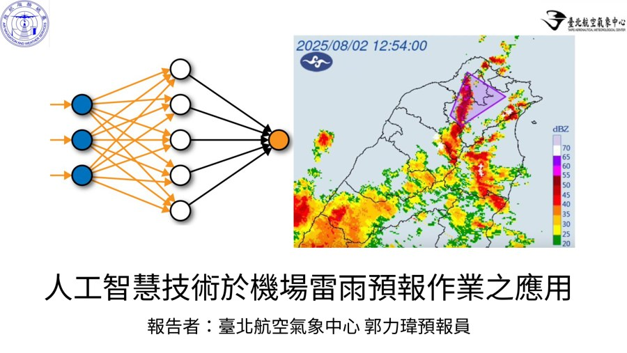

颱風預報
五個颱風、十個機場、四種預報方法。完整簡報、熱力圖與個案分析（35頁）。
PDF 簡報 · CSV：AI 與 TWRF 命中率及差值（統計資料，非逐時觀測）
臺北航空氣象中心 ／ 研究成果
Aviation Weather Research
各研究成果皆可線上瀏覽（其他分類尚未上架）；目前僅開放颱風研究 PDF 及 CSV 統計資料下載。
五個颱風、十個機場、四種預報方法。完整簡報、熱力圖與個案分析（35頁）。

已收錄 · 21 頁LSTM 六小時能見度預報、起霧氣候統計、個案驗證與研究成果。

已收錄 · 26 頁午後雷雨氣候統計、客觀預報方法及三小時 AI 雷雨預報研究。
其他航空氣象研究及技術成果。